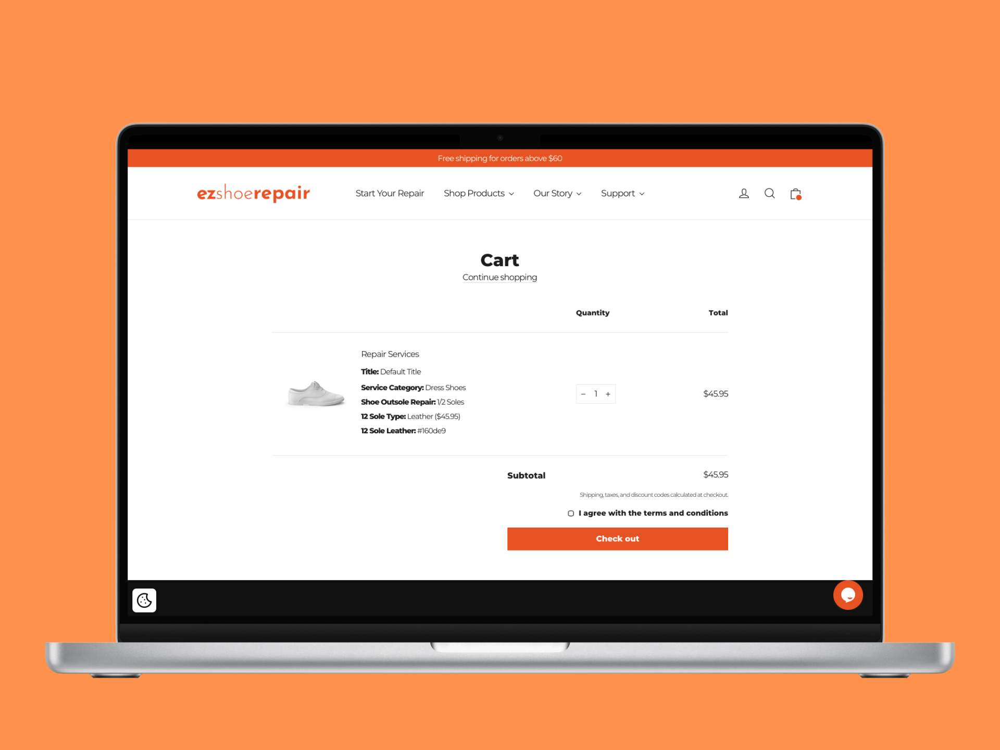
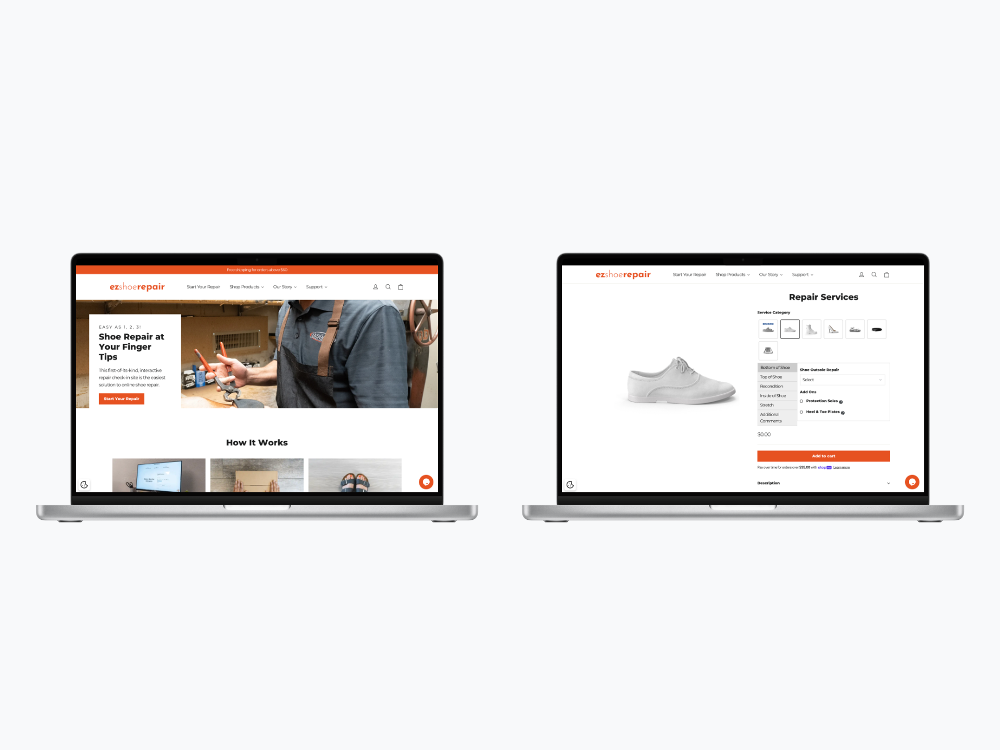

EZ Shoe Repair
Turning a jargon-heavy repair service into a visual checkout, from no idea what I need to ordered in under five minutes.

Making a complex service feel effortless online.
EZ Shoe Repair is an online shoe repair service, a category most people still associate with dropping shoes off at a local cobbler. The challenge was getting customers to trust the process enough to order online, navigate the repair options confidently, and complete checkout without confusion.
I led the full design of their e-commerce experience, creating a clean, visual and educational checkout flow that replaced a long, jargon filled form with an intuitive tile based selection system.
Meaningful increase in completed online orders after launch, the old flow was actively blocking purchases from going through
The design target: from landing to confirmed order, with no prior knowledge of shoe repair terminology required
Average order value rose as clearer service discovery led customers to add repairs they previously would not have found
Same owner, two storefronts. EZ Shoe Repair is where you fix your shoes. Dardano's is where you buy them. I designed both ends of the journey.
A specialized service lost in a sea of jargon.
The existing online repair process was a major conversion barrier. Customers were met with outdated interfaces and lengthy text heavy forms packed with technical terminology most people do not know: sole replacement types, welt stitching, heel caps. The result was confusion, low trust and abandoned orders.
The business could not scale with a flow that actively pushed customers away before they could complete a purchase. The experience needed to be rebuilt from the ground up around clarity, education and trust.
I just want the checkout to be quick and painless: no surprises, no unnecessary steps. I don't know what half these repair options even mean.
Amelia Chen, goal-oriented professional, user research interviewWhat I owned.
I led the design end to end, research, the checkout architecture, the visual system and the interaction design, and partnered closely with one engineer to build it. The whole brief came down to a single problem: customers do not speak cobbler. Sole replacement, welt stitching, heel counters: that is industry language, not customer language.
Two decisions did the heavy lifting.
Show, do not name
People could not pick the right repair from text alone, so I killed the jargon form entirely and led every option with a photo, a plain language description and an upfront price. Customers identify what they need at a glance instead of decoding technical terms, the single change that unlocked conversion.
Tap, do not type, on mobile
Every form field was a place to lose someone, and most people were ordering on their phone. So I rebuilt the flow around quick tap selection over text entry, mobile first, with trust signals, reviews, guarantees and turnaround times built into the steps.
What shipped.


What we delivered.
The checkout finally converted
The old flow was losing customers before they got halfway through. The redesigned tile based experience removed every unnecessary step, and for the first time, the majority of users who started the flow actually finished it.
Customers started adding more services
When repair options are clearly presented with images and plain descriptions, people discover services they did not know they needed. Average order value increased.
Non-tech users could complete orders unassisted
Usability testing with low-tech participants, the segment most likely to abandon, showed they could move from landing page to confirmed order without asking for help. That was the real benchmark.
A scalable foundation for growth
The tile system was built to scale: new repair services could be added as visual tiles without rethinking the flow.